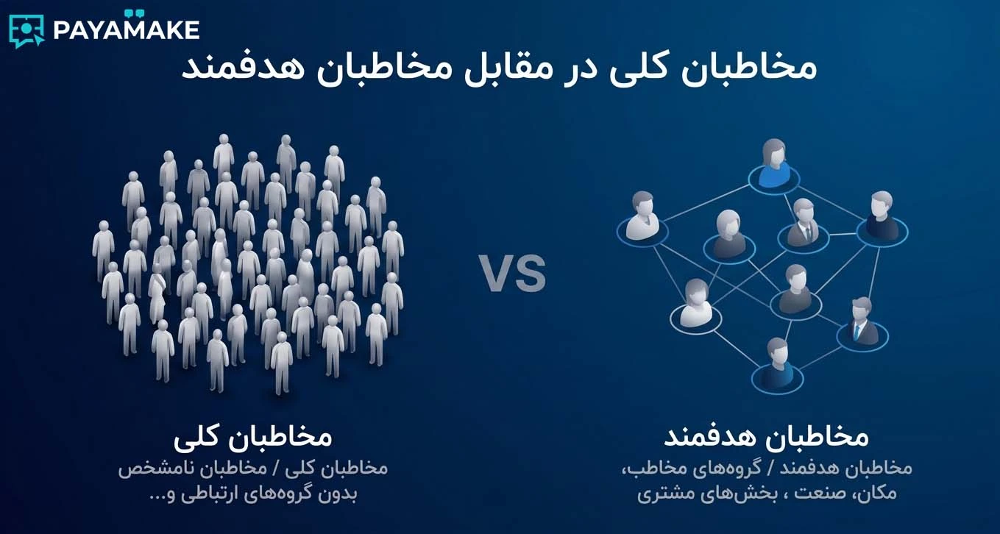
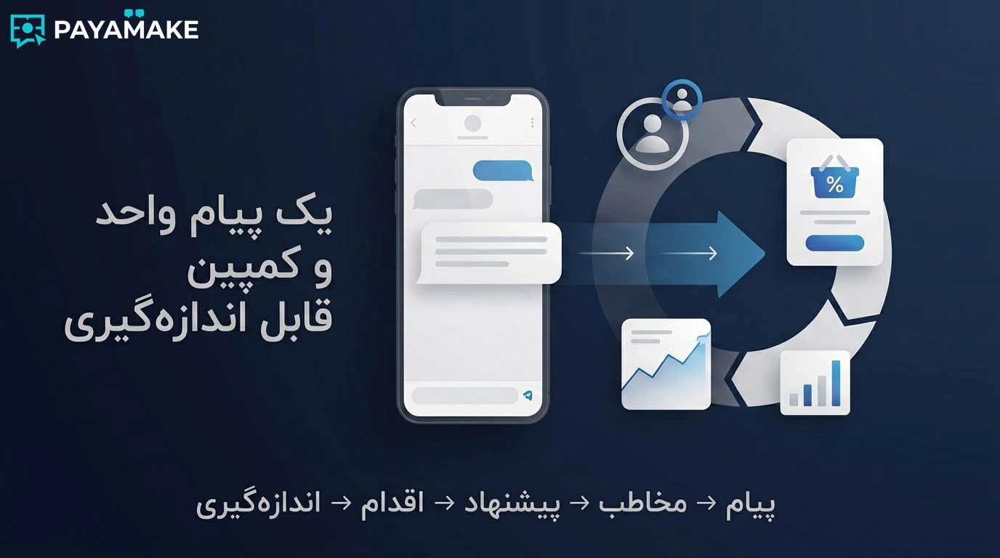
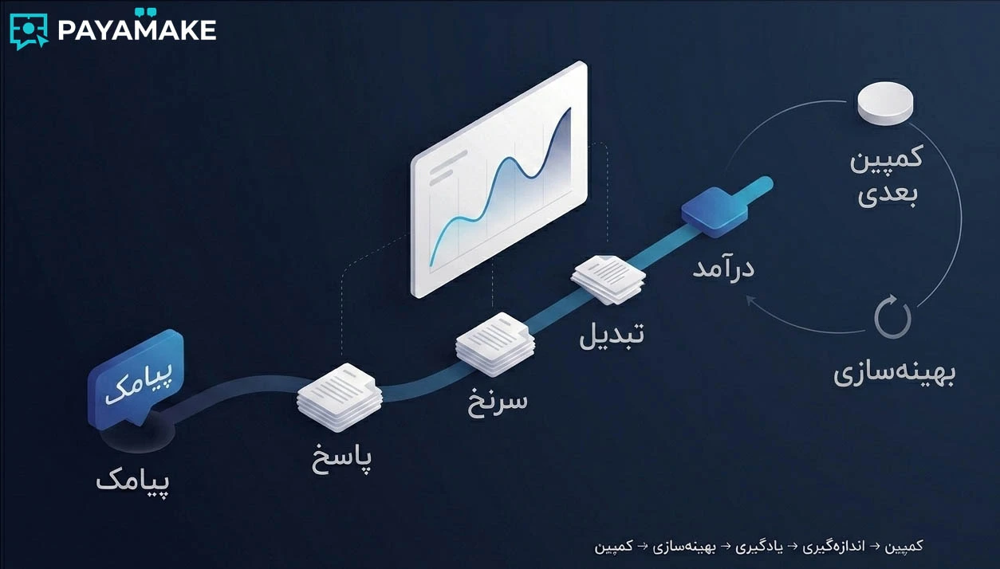
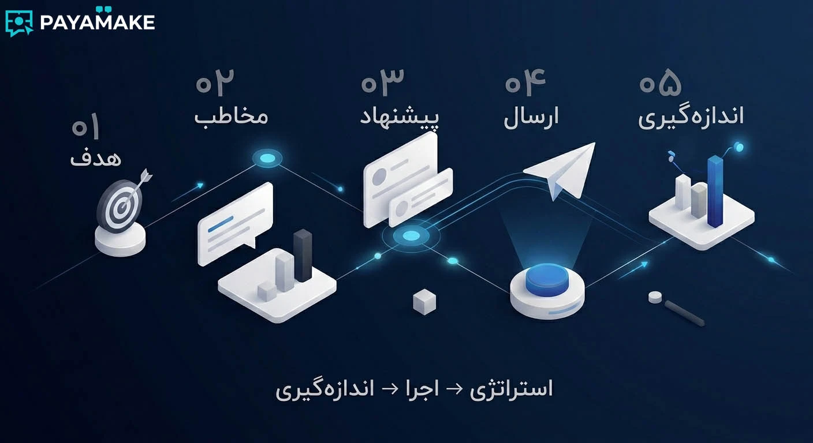

اگر تا امروز پیامک را فقط به عنوان ابزاری برای اطلاعرسانی، فرستادن تخفیف یا ارسال پیامک به مشتریان دیدهاید، احتمالاً بخشی از ظرفیت آن را نادیده گرفتهاید. تفاوت یک پیامک معمولی با یک کمپین بازاریابی پیامکی در «تعداد پیامهای ارسالشده» نیست؛ در تصمیمهایی است که قبل و بعد از فشردن دکمه ارسال گرفته میشوند.
در این راهنما از تعریف ساده بازاریابی پیامکی شروع میکنیم و بعد سراغ مخاطب، متن پیام، زمانبندی، اجرای کمپین و سنجش نتیجه میرویم. هدف، ارائه یک نسخه ثابت برای همه کسبوکارها نیست؛ هدف این است که منطق یک کمپین قابل اندازهگیری روشن شود.
بازاریابی پیامکی چیست؟
بازاریابی پیامکی یا SMS Marketing استفاده برنامهریزیشده از پیامک برای برقراری ارتباط با مشتریان و مخاطبان بالقوه است. این ارتباط میتواند برای معرفی محصول، ارائه پیشنهاد فروش، بازگرداندن مشتری، اطلاعرسانی یک رویداد یا ایجاد یک اقدام مشخص انجام شود.
بنابراین «پیامک تبلیغاتی» فقط یکی از کاربردهای بازاریابی پیامکی است. یک کسبوکار ممکن است برای مشتری فعلی پیام یادآوری بفرستد، برای مشتری غیرفعال پیشنهاد بازگشت ارسال کند یا برای مخاطب جدید یک پیشنهاد اولیه ارائه دهد. چیزی که همه این سناریوها را به بازاریابی تبدیل میکند، داشتن هدف و مخاطب مشخص است.

تفاوت ارسال پیامک انبوه با بازاریابی پیامکی هدفمند
ارسال پیامک انبوه از نظر فنی میتواند ساده باشد: یک متن آماده میکنید، فهرست شماره را انتخاب میکنید و پیام را میفرستید. اما اگر همه مخاطبان نیاز، موقعیت یا ارزش یکسانی نداشته باشند، افزایش حجم ارسال لزوماً به معنی افزایش نتیجه نیست. اگر مخاطب دقیق انتخاب شود، پیامک هدفمند میتواند منطقیتر از ارسال گسترده باشد.
در یک کمپین هدفمند، ابتدا مخاطب را تعریف میکنید و بعد مشخص میکنید آیا ارسال پیامک باید برای کل فهرست انجام شود یا فقط برای یک گروه مشخص. یک مجموعه محلی ممکن است فقط محدوده جغرافیایی مرتبط را بخواهد؛ یک کسبوکار تخصصی ممکن است مخاطبان یک صنف را هدف بگیرد؛ و یک فروشگاه آنلاین شاید به جای جذب مشتری جدید، روی بازگشت خریداران قبلی تمرکز کند.
| ارسال انبوه بدون برنامه | کمپین هدفمند |
|---|---|
| تمرکز روی تعداد ارسال | تمرکز روی هدف و مخاطب |
| یک پیام برای همه | پیام متناسب با سناریوی مخاطب |
| سنجش محدود نتیجه | تعریف شاخص و مقایسه نتیجه |
| احتمال اتلاف بودجه | امکان بهینهسازی مرحلهبهمرحله |
انتخاب مخاطب؛ مهمتر از تعداد پیامک
یکی از رایجترین اشتباهات در تبلیغات پیامکی این است که ابتدا حجم ارسال تعیین شود و بعد به فکر مخاطب بیفتیم. در عمل، کیفیت انتخاب مخاطب میتواند از افزایش تعداد پیامها مهمتر باشد. این همان جایی است که بانک شمارههای تخصصی میتواند در طراحی کمپین نقش داشته باشد.
بسته به نوع کمپین، میتوان مخاطب را با معیارهایی مانند منطقه، شهر یا محله، صنف و شغل، سن و جنسیت، پیششماره، کد و رنج شماره و سایر دستهبندیهای قابل استفاده تعریف کرد. این تفکیک زمانی ارزشمند است که با پیشنهاد کمپین ارتباط واقعی داشته باشد.
یک مثال ساده
فرض کنید یک مجموعه خدماتی در یک محدوده مشخص فعالیت میکند. ارسال پیام به تمام شمارههای یک شهر ممکن است حجم بالایی ایجاد کند، اما لزوماً مخاطب مناسبی نمیسازد. اگر هدف کمپین محلی باشد، محدود کردن جامعه مخاطب به منطقه و محله مرتبط میتواند فرضیه بهتری برای شروع آزمایش باشد.
هر فیلتر نباید صرفاً برای «خاصتر کردن» بانک شماره استفاده شود. فیلتر باید به یک سؤال کسبوکاری جواب بدهد: چه کسی احتمال بیشتری دارد به این پیشنهاد واکنش نشان دهد؟
یک پیامک تبلیغاتی خوب چه ویژگیهایی دارد؟
محدودیت فضای پیامک یک مزیت هم دارد: شما را مجبور میکند پیام را دقیق کنید. پیام تبلیغاتی قرار نیست همه چیز را درباره کسبوکار توضیح دهد؛ باید توجه مخاطب را جلب کند، ارزش پیشنهاد را روشن کند و یک اقدام مشخص پیشنهاد دهد.
- پیشنهاد مشخص داشته باشید. مخاطب باید سریع بفهمد چه چیزی دریافت میکند؛ تخفیف، پیشنهاد ویژه، رزرو، مشاوره یا یک مزیت مشخص.
- متن با سناریوی مخاطب هماهنگ باشد. یک متن عمومی برای همه گروهها همیشه بهترین انتخاب نیست.
- دعوت به اقدام روشن بنویسید. «رزرو کنید»، «مشاوره بگیرید» یا «کد را استفاده کنید» بهتر از پایان مبهم است.
- هویت فرستنده را روشن کنید. مخاطب باید بداند پیام از طرف چه کسبوکاری آمده است.
- اغراق نکنید. وعدهای که در صفحه مقصد یا هنگام تماس قابل ارائه نیست، به اعتماد آسیب میزند.
اگر متن را برای یک گروه تخصصی مینویسید، لازم نیست فقط نام صنف را داخل پیام قرار دهید. مهمتر این است که خود پیشنهاد با مسئله همان گروه ارتباط داشته باشد.

ساختار یک کمپین پیامکی حرفهای
یک کمپین خوب را میتوان به چند تصمیم پشت سر هم تقسیم کرد. این تقسیمبندی کمک میکند اگر نتیجه ضعیف شد، بفهمیم مشکل از کدام مرحله بوده است.
هدف
یک هدف روشن انتخاب کنید؛ جذب لید، فروش، رزرو، بازگشت مشتری یا اطلاعرسانی.
مخاطب
مشخص کنید چه گروهی بیشترین ارتباط را با پیشنهاد شما دارد.
پیشنهاد
دلیل مشخصی برای واکنش مخاطب بسازید و آن را کوتاه و شفاف بیان کنید.
ارسال
زمان و حجم ارسال را بر اساس هدف کمپین انتخاب کنید، نه صرفاً بودجه باقیمانده.
اندازهگیری
نتیجه را ثبت کنید و برای ارسال بعدی یک فرضیه مشخص برای بهبود داشته باشید.
بهترین زمان ارسال پیامک چه زمانی است؟
یک ساعت جادویی که برای همه کسبوکارها بهترین باشد وجود ندارد. زمان مناسب به نوع پیشنهاد و رفتار مخاطب بستگی دارد. پیام یک رستوران، کلینیک، فروشگاه اینترنتی و شرکت خدماتی لزوماً نباید در یک ساعت ارسال شوند.
بهتر است زمان ارسال را بخشی از آزمایش کمپین بدانید. اگر جامعه مخاطب اجازه میدهد، گروههای مشابه را در زمانهای مختلف آزمایش کنید و نتیجه را با یک معیار ثابت مقایسه کنید. این روش از تکیه بر توصیههای عمومی دقیقتر است.

چطور نتیجه تبلیغات پیامکی را اندازه بگیریم؟
«پیامک ارسال شد» فقط یک گزارش فنی از ارسال پیامک است، نه نتیجه بازاریابی. برای سنجش کمپین باید از همان ابتدا مشخص کنید موفقیت را با چه اتفاقی میسنجید.
- نرخ پاسخ: چند نفر بعد از دریافت پیام، پاسخ یا تماس ایجاد کردهاند؟
- تعداد لید: چند مخاطب جدید وارد فرآیند فروش شدهاند؟
- نرخ تبدیل: چند نفر از پاسخدهندگان به مشتری تبدیل شدهاند؟
- هزینه جذب: برای هر مشتری جدید چه مقدار از هزینه کمپین صرف شده است؟
- درآمد کمپین: اگر فروش هدف بوده، چه مقدار درآمد قابل انتساب به کمپین ایجاد شده است؟
اگر لینک قابل اندازهگیری یا کد تخفیف دارید، استفاده از آن میتواند نسبت دادن نتیجه به کمپین را سادهتر کند. برای کمپینهای تلفنی نیز میتوان یک شماره یا عبارت مشخص برای پیگیری تعریف کرد تا مشخص شود تماس از کدام ارسال آمده است.
اشتباهات رایج در بازاریابی پیامکی
بزرگ بودن فهرست شمارهها و انجام ارسال پیامک انبوه بهتنهایی مزیت نیست بهتنهایی مزیت نیست؛ ارتباط مخاطب با پیشنهاد مهمتر است.
اگر مخاطب سریع نفهمد چرا باید ادامه دهد، احتمال از دست رفتن توجه بالا میرود.
پیام باید مشخص کند مخاطب بعد از خواندن آن چه کاری انجام دهد.
تعداد بیشتر ارسال الزاماً به معنی فروش بیشتر نیست و میتواند تجربه مخاطب را خراب کند.
اگر قبل از ارسال ندانید چه چیزی را میسنجید، بعد از کمپین هم تحلیل قابل اتکایی نخواهید داشت.

چکلیست اجرای یک کمپین پیامکی
- هدف کمپین را در یک جمله نوشتهام.
- مخاطب کمپین مشخص است.
- بانک شماره یا فهرست مخاطبان با هدف کمپین ارتباط دارد.
- پیشنهاد فروش یا ارزش پیام مشخص است.
- متن پیام کوتاه و قابل فهم است.
- نام کسبوکار یا فرستنده مشخص است.
- دعوت به اقدام واضح است.
- زمان ارسال با رفتار مخاطب هماهنگ شده است.
- روش اندازهگیری نتیجه قبل از ارسال مشخص شده است.
- برای نتیجه کمپین یک برنامه بهینهسازی دارم.
جمعبندی
بازاریابی پیامکی زمانی ارزشمند میشود که از «ارسال پیام» عبور کند و به یک فرآیند قابل تصمیمگیری تبدیل شود. مخاطب مناسب، پیشنهاد مناسب، متن روشن، زمانبندی منطقی و اندازهگیری نتیجه پنج بخش اصلی این فرآیند هستند.
اگر قرار است یک کمپین جدید اجرا کنید، لازم نیست از همان ابتدا پیچیدهترین مدل را بسازید. یک هدف مشخص انتخاب کنید، جامعه مخاطب را تا حد ممکن دقیق تعریف کنید، یک پیشنهاد روشن بسازید و نتیجه را ثبت کنید. سپس از داده همان کمپین برای بهتر کردن ارسال بعدی استفاده کنید.